Review · Topic 9
Dysrhythmias
Reading a Rhythm Strip
For further study, see Med Surg II Week 2 – Dysrhythmias.
| Wave | What to Know |
|---|---|
| P wave | Atrial depolarization: the atrial kick. A little bump. |
| PR interval | From the start of the P to the start of the QRS: the pause while the impulse goes through the AV node. 0.12 to 0.20 seconds. Longer: something is wrong with conduction between the atria and the ventricles. |
| QRS complex | Ventricular depolarization: a big spike, where cardiac output happens. Atrial repolarization is buried in it. 0.10 seconds or less, 0.12 in some sources: skinny. Wide is not normal. |
| ST segment | Back on the baseline (the isoelectric line). Elevated: may indicate an MI. |
| T wave | Ventricular repolarization. Peaked: may be a potassium imbalance. |
| QT interval | Under 0.38 seconds. |
| R to R interval | The tip of one R to the tip of the next. Equal intervals that "march out" make a regular rhythm. |
ST elevation and troponin, telling a STEMI from an NSTEMI, are taught in the Heart Disease review
Measuring a Six-Second Strip
- One small box: 0.04 seconds. Five small boxes, one big box: 0.20 seconds.
- Six seconds: every strip on a test. The marks at the top are 3 seconds apart.
- Heart rate: the QRSs in the six seconds, times 10.
- Regular or not: march out the R to R intervals.
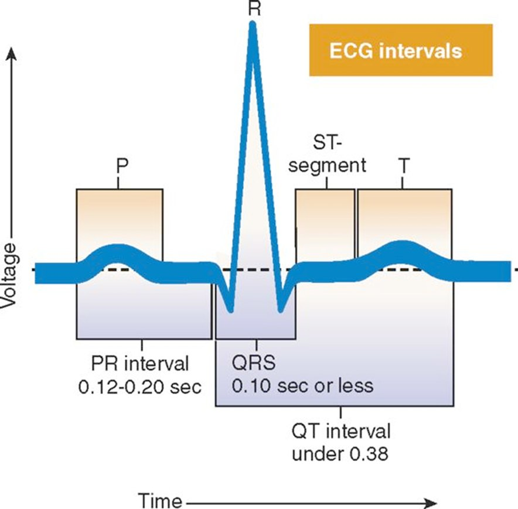
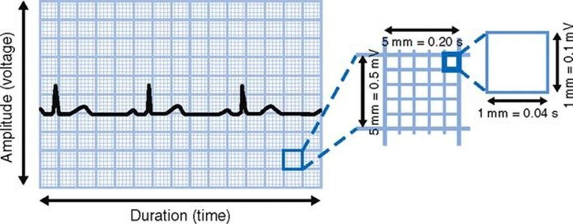
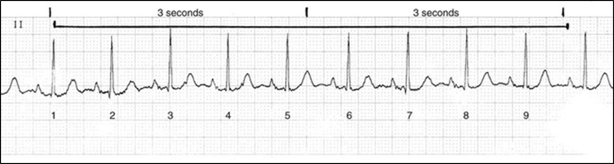
Two Ways to Sort Dysrhythmias
By Rate: Early, Slow, Fast
- Premature complexes: early beats.
- Bradydysrhythmias: a heart rate below 60.
- Tachydysrhythmias: a heart rate above 100.
- Why 60 and 100: the SA node fires 60 to 100 times a minute on its own.
By Site of Origin
- Sinus: from the SA node.
- Atrial: from the atria.
- Ventricular: from the ventricles.
Rhythms and Cardiac Output
For further study, see Med Surg II Week 2 – Dysrhythmias.
Cardiac output, and what low cardiac output means, is taught in the Cardiovascular review
Bradydysrhythmias: Below 60
- Myocardial oxygen demand: reduced, a good thing. Beta blockers slow the heart rate on purpose for it.
- Coronary perfusion: the coronary arteries perfuse in diastole. A slow rate prolongs diastole: more perfusion time. Too slow: perfusion falls, and angina may start.
- Cardiac output: may be tolerated if the BP is adequate. An athlete resting at 54 with a good BP goes about the day. Another patient at 54 is symptomatic.
Tachydysrhythmias: Above 100
- Myocardial oxygen demand: raised by the extra workload, a bad thing. Worse in a compromised heart.
- Coronary perfusion: a shorter diastole shortens perfusion time, and angina may start.
- Cardiac output: may rise at first, with the BP: compensation. Faster or sustained, the ventricles cannot fill: stroke volume falls, and with it cardiac output and BP. 104 is usually tolerable. 120 or 130 cannot be sustained.
Either, if not tolerated, can lead to: myocardial ischemia or infarct, dysrhythmias, hypotension, heart failure.
Key Features of a Sustained Tachy- or Bradydysrhythmia
What Too Slow or Too Fast Looks Like
- Heart: angina, from a lack of coronary perfusion. An S3 or S4, a gallop. Palpitations, with a tachycardia. Hypotension.
- Brain, poorly perfused: restlessness, anxiety, confusion. Dizziness, syncope.
- Lungs: shortness of air, tachypnea. Pulmonary crackles, a sign of left-sided heart failure. Orthopnea.
- Periphery: a pulse deficit. JVD, a sign of right-sided heart failure. Pale, cool skin, diaphoresis, delayed cap refill. Weakness, fatigue.
- Kidneys, poorly perfused: decreased urine output. Watch it closely.
- GI: nausea and vomiting.
The Atria Versus the Ventricles
Atrial Dysrhythmias: the Ventricular Rate Matters
- The atrial kick is lost in AFib, and inconsistent in flutter.
- The ventricular rate is what matters: the left ventricle is the powerhouse chamber. The AV node, the gatekeeper, lets only some atrial impulses through.
- Controlled: AFib with a ventricular rate of 90 is not ideal, but livable.
- Too fast: no time for the ventricles to fill. Stroke volume and cardiac output fall.
PVCs
Typically do not perfuse. With bigeminy, only every other beat perfuses.
VTach
Seriously decreases cardiac output: too fast for the ventricles to fill. A pulse means it is perfusing.
VFib
No cardiac output: the ventricles only quiver. A deadly rhythm.
Untreated, each slips into the next, and the further it goes, the less well treatment works.
The Eleven Rhythms
For further study, see Med Surg II Week 2 – Sinus Dysrhythmias, Med Surg II Week 2 – Atrial Dysrhythmias and Med Surg II Week 2 – Ventricular Dysrhythmias.
Sinus Rhythms
The Two Normal Sinus Rhythms
- Normal sinus rhythm (NSR): the SA node fires 60 to 100, with normal conduction. A P before every QRS, all alike, and the R to R regular. Often just called "sinus".
- Sinus arrhythmia: the same, but the R to R is not quite regular. Changes in intrathoracic pressure with breathing change the SA node's firing. A normal physiological phenomenon, seen in young, healthy people. Not treated: an assessment finding.
| Rhythm | On the Strip | Causes | What the Patient Looks Like | Treatment |
|---|---|---|---|---|
| Sinus bradycardia |
|
|
|
|
| Sinus tachycardia |
|
|
|
|
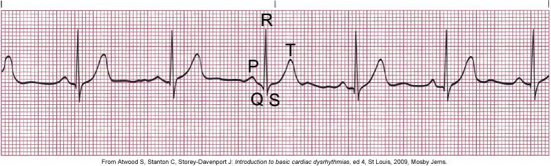
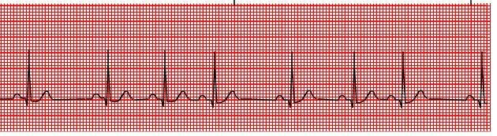
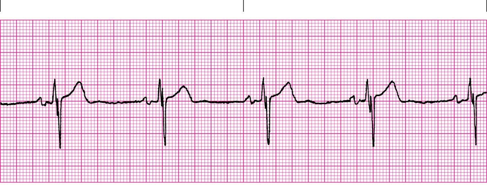
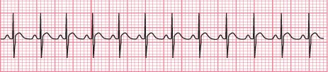
Atrial Dysrhythmias
| Rhythm | On the Strip | Causes | What the Patient Looks Like | Treatment |
|---|---|---|---|---|
| Premature atrial contraction (PAC) |
|
|
|
|
| Atrial fibrillation (AFib) |
|
|
|
|
| Atrial flutter |
|
|
|
|
| Paroxysmal supraventricular tachycardia (PSVT) |
|
|
|
|
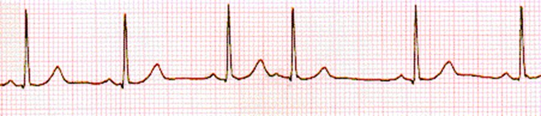
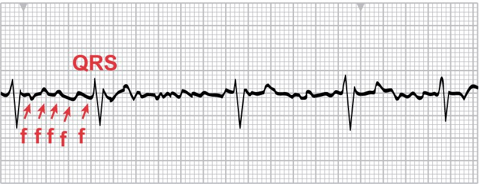
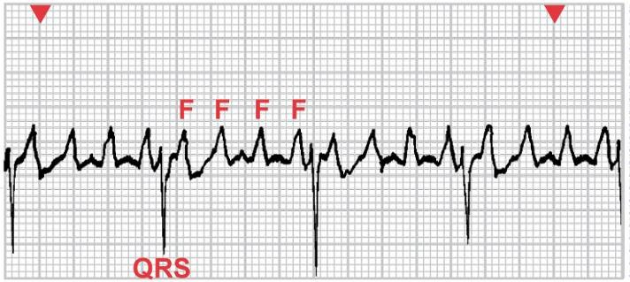
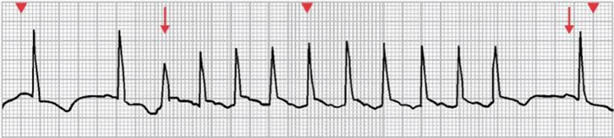
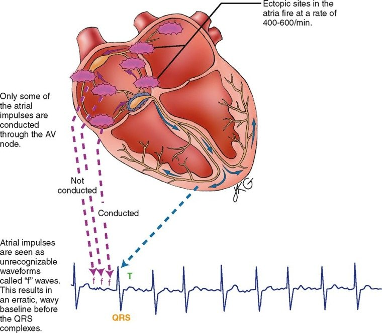
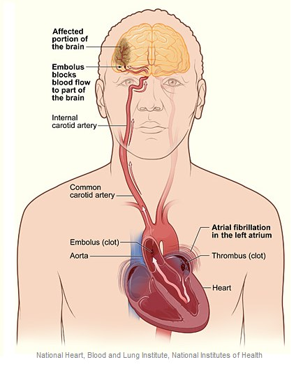
Ventricular Dysrhythmias
| Rhythm | On the Strip | Causes | What the Patient Looks Like | Treatment |
|---|---|---|---|---|
| Premature ventricular contraction (PVC) |
|
|
|
|
| Ventricular tachycardia (VTach) |
|
|
|
|
| Ventricular fibrillation (VFib) |
|
|
|
|
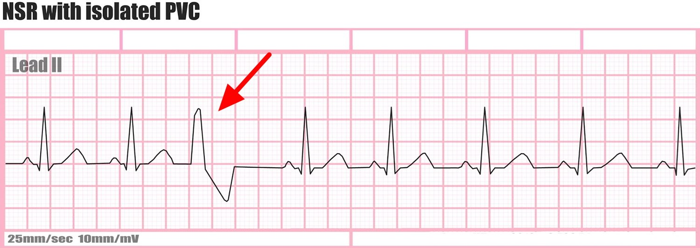
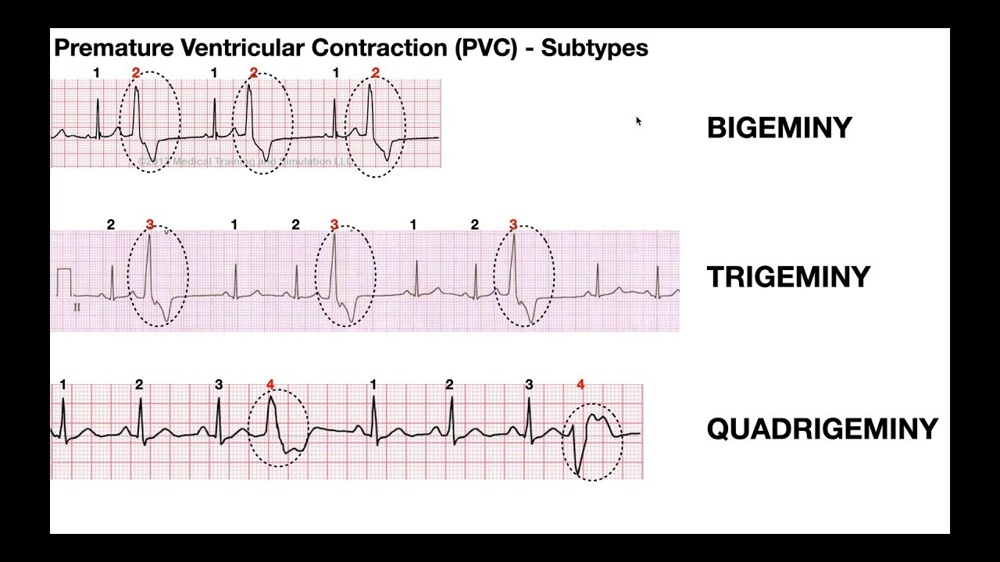
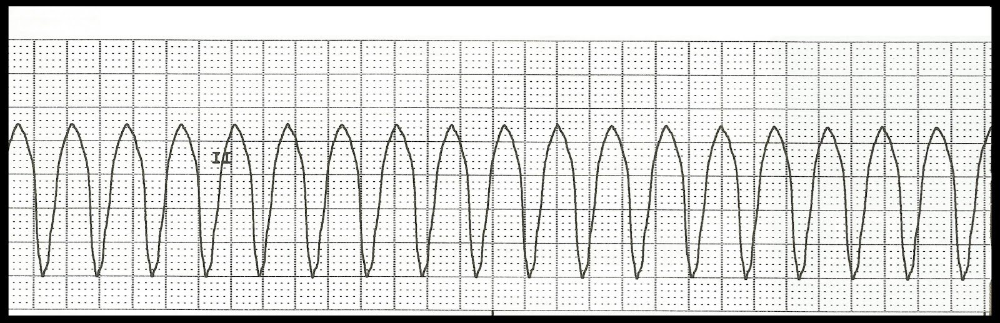
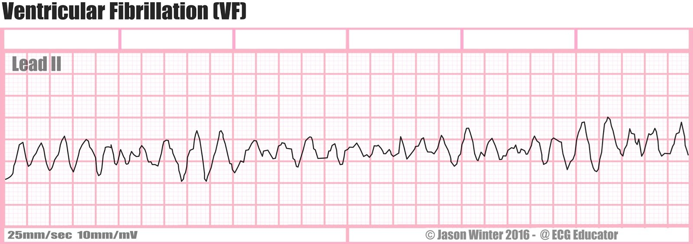
Treatment
For further study, see Med Surg II Week 2 – Atrial Dysrhythmias and Med Surg II Week 2 – Ventricular Dysrhythmias.
AFib and Atrial Flutter
Three Goals of Treatment
- Rate control, the ventricular rate: the priority. Beta blockers such as metoprolol, or calcium channel blockers such as diltiazem and verapamil. IV at first.
- Rhythm control: amiodarone or dofetilide. IV at first.
- Preventing an embolic stroke: warfarin, or another anticoagulant.
Stable, but Symptomatic
- Slow the ventricular rate: an IV calcium channel blocker, beta blocker, digoxin or amiodarone.
- Often a bolus and a drip: the bolus raises the drug level at once, and the drip keeps it there. A drip alone takes too long.
Unstable
- Hemodynamically compromised: synchronized cardioversion. See below.
- Emergent cardioversion: low-molecular-weight heparin or a heparin drip is started as well.
Before Cardioverting AFib
- AFib for more than 48 hours: clots may have formed in the atria. Cardioversion restores the kick and throws the clot to the brain: a stroke.
- Anticoagulation, usually warfarin: 3 to 6 weeks before cardioversion, and 3 to 4 weeks after.
- A TEE may be done first, to make sure there are no clots in the atria.
Drugs often work, but fail often and can be toxic. Two treatments are not drugs:
Catheter Ablation
- Invasive: destroys the irritable focus causing the dysrhythmia.
- First: electrophysiology (EP) studies and mapping, to locate the focus.
Maze Procedure
- Surgical: incisions in the atrium disrupt the re-entrant circuits.
- Leaves one path from the SA node to the AV node, like a children's maze.
PSVT
Vagal Maneuvers
First, on the monitor.
Adenosine
If they fail: IV push.
Synchronized Cardioversion
If both fail, or the patient becomes hemodynamically unstable.
Vagal Maneuvers for PSVT
- Valsalva, the most effective: bear down as for a bowel movement. Hold the breath 10 to 15 seconds, hard enough to distend the neck veins, then breathe.
- Coughing: a ventilated patient can be suctioned to make them cough.
- Carotid sinus massage: provider only. Never the nurse.
- Diving reflex: the face in cold water. Rarely used now.
Cardioversion Versus Defibrillation
Synchronized Cardioversion
- For: a hemodynamically unstable supraventricular tachydysrhythmia: AFib, flutter, SVT. Needs an R wave.
- Sync on: the shock lands on the R wave of the QRS. Unsynchronized, a shock on the wrong part of the complex can trigger a life-threatening dysrhythmia.
- Energy: 50 to 100 joules at first, raised if needed: 50 to 200 in all.
- The patient: usually elective, awake, and sedated first unless it is an emergency. A consent form, and the EKG monitor.
- Pulseless after: the QRS is lost. Sync off, and defibrillate.
- After: a patent airway and oxygen, vital signs and level of consciousness, watch for dysrhythmias, emotional support. Document whether it worked.
Defibrillation
- For: VFib and pulseless VTach: no cardiac output. An emergency: call a code.
- Sync off: there is no QRS to sense, so with the sync on it would never fire. It fires the moment the button is pushed.
- Energy: more than cardioversion. Begins at 200 joules, up to 360.
- The patient: unconscious, on the cardiac monitor.
The Drugs
For further study, see Med Surg II Week 2 – Sinus Dysrhythmias and Med Surg II Week 2 – Atrial Dysrhythmias.
| Drug | What It Does | Used For | How It Is Given |
|---|---|---|---|
| Atropine |
|
|
|
| Adenosine |
|
|
|
| Beta blockers, such as metoprolol |
|
|
|
| Amiodarone |
|
|
|
Pacing
For further study, see Med Surg II Week 2 – Sinus Dysrhythmias.
Transcutaneous Pacing
- When: symptomatic sinus bradycardia that atropine does not fix. Right here, right now.
- How: pads on the patient, and the device paces the heart through the skin. It stands in for the SA node.
Permanent Pacemaker
- When: a persistent bradycardia that responds to nothing else. The provider decides.
- How: under the skin, usually just below the clavicle. Fires when the SA node is not cooperating.
- Paces as needed: every sixth beat in one patient, every beat in another.
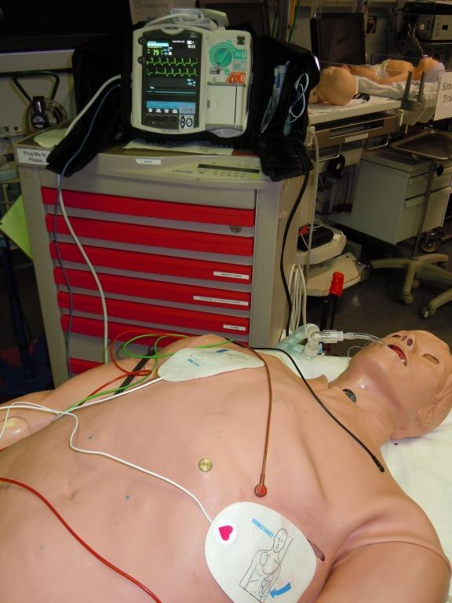
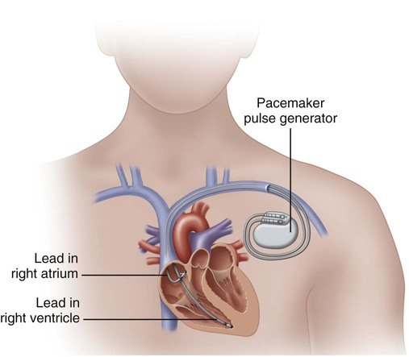
ICDs and Device Restrictions
When an ICD Fires
- The patient feels the shock: a sudden, hard thump or kick in the chest.
- One shock, and the patient feels well after: call the provider that day.
- More than one shock, or chest pain, dizziness or shortness of breath: call 911.
Living With a Pacemaker or ICD
- For the first few weeks: keep the arm on the device side below the shoulder, and lift nothing heavy with it, while the leads settle in.
- Magnets and cell phones at least 6 inches from the device: no phone in a shirt pocket over it.
- Carry the device ID card at all times.